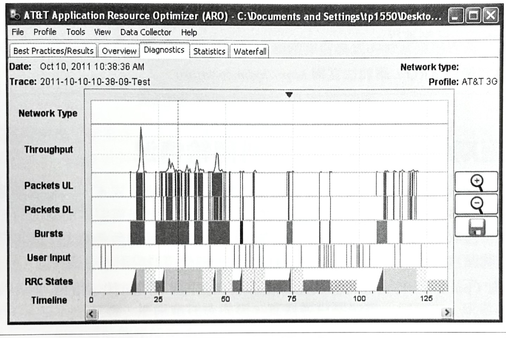
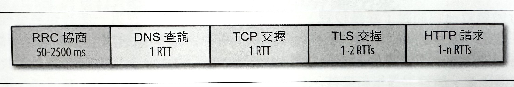
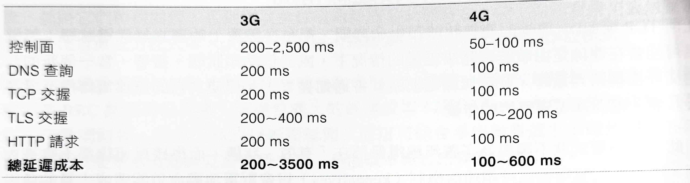

1-18-9 無線網路效能-行動網路最佳化
截至目前為止，以我們所談過，藉助持續連線、將伺服器與資料往更貼近客戶端的地理位置移動、TLS 部署方式的最佳化處理，以及所有其他協定的最佳化作業—這類可將延遲時間降到最低的方式，在行動應用程式上都是相當重要的部分，因為延遲和吞吐量一直都是需要被特別關注的。此外，所有網頁應用程式效能的最佳慣例也都同樣適用。
然而，行動網路也會對我們的效能策略造成新的特有需求。行動網站應用程式的設計工作，需要針對裝置形式、無線電介面的獨特效能屬性，以及電池壽命的影響等部分所帶來的限制情況，而在內容的呈現上進行謹慎的規劃和考量。因為那三者存在著密不可分的關係。
也許是因為最容易控制的關係，因此像響應式設計（responsive design）之類的主題，在展示層（presentation）上就很容易受到更多的關注。然而，大多數的應用程式做得似乎都不怎麼成功，而這往往是因為在網路效能方面，做了不正確的設計前提：比如說，應用程式協定雖然都一樣，但是在實體傳輸層裡的差異其實被強加了許多限制，而這些要是不加以說明的話，將會因為冗長的回應時間、高延遲變化性，以致於最後讓使用者產生不良的感受。更糟糕的是，拙劣的網路決策還將會在裝置的電池壽命上，帶來嚴重的負面影響。
對於以上三者的限制，並沒有通用的解決方法。針對展示層、網路連線，和電池壽命的效能方面，有一些合適的慣例，不過往往都會有相互制衡的情況：你可以為應用程式來根據自己的需求去自行找出適當的平衡點。可以肯定的是：要是忽略了其中的任何一點，都不會是個長久之計。
有了這樣的想法，我們就不用費太多心思在展示層的聞述上，因為每個平台和應用程式類型都不一樣一事實上，市面上已經有很多專門針對這項主題的書籍可供參考。但是，不管是用什麼方式，或者是在哪種作業系統裡，行動網路所帶來的無線電和電池限制問題，都是普遍存在的，而這正是本章內容的討論重點。
在本章當中，尤其是在以下幾頁的內容裡，對於「行動應用程式」這個詞，是以最廣泛定義來使用的：我們在行動網路效能上的所有討論，都適用於各種平台的原生應用程式上，而且對於在你的任何一種瀏覽器當中所執行的應用程式，也都一樣適用。
節省電池電量
一旦牽涉到「行動」，「節省電力」就成為與裝置製造商、電信業者、應用程式開發者，和應用程式的終端使用者等等的每個人，都有關的重要議題。若有疑問，或者想知道特定行動網路行為的發生原因或運作方式，就只要問個簡單的問題：它會如何影響，或提升電池壽命？事實上，這也會是一個用來要求應用程式裡的任何一項，或者是每一項功能的好問題。
在行動網路上的網路傳輸效能天生就與電池效能有關。事實上，無線電介面的實體層，是針對底下限制而被特別建立起來，以便對電池壽命進行最佳化：
- 全功率的無線電使用情況，可能會在幾個小時內就耗盡一整個電池的電力。
- 無線電電力需求會隨著每個無線世代而逐漸攀升。
- 無線電通常是除了螢幕以外，第二個電力消耗的主要來源。
- 無線電使用狀況會與已傳輸的資料，呈現一種非線性的能量分佈情形。
有了這樣的觀念後，行動應用程式就盡力地去將無線電介面的使用情況降到最低。更明確地來說，這並不是說你應該要完全都避免使用無線電——畢竟我們正在建立的連線應用程式還是得對網路進行存取！不過，由於讓無線電保持在有效狀態，對電池壽命來說是相當昂貴的成本，因此我們的應用程式應該在無線電處於開啟的狀態下，盡可能讓傳輸資料量達到最大程度，並尋求以最少的次數來進行額外的資料傳輸工作。
儘管 WiFi 是使用無線電介面來傳送資料，但要瞭解到的重點是：WiFi 的底層機制、傳輸延遲、吞吐量，以及 WiFi 的電源配置情況，與 2G、3G 和 4G 行動網路相比較之下，根本是不一樣的。因此，在 WiFi 和行動網路上的網路傳輸行為，通常也應該會有所不同。詳細參考 1-18-8 《3G、4G 和 WiFi 電力需求》。
使用 AT&T 應用程式資源最佳化程式來測量能量使用狀況
儘管高度重視最佳化能量的使用情況，但大多數平台目前卻都缺乏一些可用來協助開發者，去對應用程式進行測量和最佳化處理的必要工具。所幸，還有像 AT&T 所開發的免費 Application Resource Optimizer（應用程式資源最佳化程式，簡稱 ARO）工具之類的第三方工具軟體，可以協助解決這些問題。
圖-1 ： AT&T 的應用程式資源最佳化程式
ARO 是由收集器（collector）和分析器（analyzer）這兩個部分所組成。收集器是一支 Android 應用程式，而它能夠以背景模式執行（在實體手機或擬真器上皆可），並擷取傳輸的資料封包、無線電活動狀況，和手機的其他互動作業。若要擷取一項追蹤軌跡的話，就先載入收集器，並點擊「Record」（記錄），然後與你的應用程式進行互動，最後就可以把軌跡資訊給複製到你的系統當中。
一旦有軌跡資訊可用，你就可以用分析器來打開它，進而瞭解你的應用程式的無線電狀態、能量耗用情況，以及流量模式。分析器的其中一項強大功能，就是它也可以針對未壓縮的冗長資料傳輸情況，以及許多常見的效能陷阱，提供有用的建議。
要特別注意一下兩件重要的東西——那就是電池消耗情況和無線電狀態，都是經由裝置的特定模型，以及無線電網路的類型所產生出來的。換句話說，產生出來的數據並不是出自於使用中裝置的精確測量結果，而是根據模型裡的特定參數所估計出來的。從另一個角度來看，這讓你能夠匯入不同裝置和網路模型，並且去比較 3G 和 4G 之類的能量使用情況。
最後，收集器是 Android 的專屬應用程式，但 ARO 分析器則可以接受由 tcpdump，或相容工具所產生出來的正規封包軌跡（pcap）檔——而 iOS 使用者就必須透過 tcpdump 的方式來進行。若要開始使用 ARO，請前往官網 http://hpbn.co/attaro 。
排除週期性與無效率的資料傳輸情況
不管要傳送的資料量有多少，行動無線電都需要有固定的電力成本，以便進行電力狀態的完整循環的事實告訴了我們，即使再小的請求，電池仍然是需要特別關切的部分。間歇性的網路存取方式是效能在行動網路上的反例；事實上，把這個相同的邏輯擴展成下列這些規則：
- 輪詢（polling）方式在行動網路上是非常昂貴的；將這項作業的處理次數降到最低。
- 盡可能採用推播傳送（push delivery）和通知機制 （notifications）。
- 外出（outbound）和入內（inbound）的請求應該被進行合併與彙處理。
- 非關鍵的請求應該要被暫緩處理，直到無線電處於有效狀態為止。
一般來說，主動推播傳送（push delivery）會比被動輪詢（polling）的方式更有效率。
然而，頻繁的推播資料流可能也是所費不貲。要是有即時更新的需要的話，你應該考慮一下以下這些問題：
- 最佳更新間隔是多久？而它能符合使用者的期待嗎？
- 若要取代固定的更新間隔方式，是否具適應性的策略可用呢？
- 入內或外出請求是否可以被彙整成更少的網路呼叫程序呢？
- 入內或外出請求是否可以被推延而暫緩處理呢？
針對「推播傳送」的部分，原生應用程式應該可以在必要之時，對特定平台的推播傳送服務進行存取。至於網頁應用程式的部分，則可以採用伺服器發送事件（server-sent events, SSEs）和 WebSocket 傳送方式，來讓延遲和協定成本降到最低程度。盡可能避免使用輪詢和代價較高的 XHR技術。
建立多通知機制，並根據裝置上的適應性間隔、使用者偏好設定，甚至是電池等級，來把相關訊息彙整成一個單一推播事件的簡單策略，將能夠對任何應用程式的電力使用狀況有明顯的改善效果——尤其是常常要仰賴這類網路存取模式的背景應用程式。
Nagle 和高效伺服器推播技術
除非在應用層上被重新實作過，否則 TCP 迷們必定會發現到請求匯聚機制，並將建議綁定成 Nagle 演算法！Nagle 演算法會試圖把多個小的 TCP 訊息，組合成一個單一封包，以減少協定成本和網路上的封包數量。無疑地，我們的行動應用程式也可以利用相同的技術來達到優異效果。
這類策略的簡單實作方式，就是把伺服器上的訊息依據時間、次數，或大小來進行彙整，以取代針對每個訊息來觸發個別推播作業的方式。有一種更為複雜，卻更有效率的策略，就是只在客戶端的無線電已經處於有效狀態的情況下，才去推播更新訊息——比如說，把訊息往後推延，直到客戶端發起一個請求，或者是啟動了客戶端的無線電狀態所能察覺到的第三方服務，才開始進行相關的推播處理。
例如，針對 Android 和 Chrome 的 Google 雲端訊息 （Google Cloud Messaging，GCM）之類的服務，會提供訊息傳送 API，而這些 API 能夠彙整訊息，並且會在裝置處於有效狀態下，才進行更新訊息的傳送作業：伺服器會把它的訊息推播至 GCM，而 GCM 會決定最佳的傳遞時程。
可惜的是，目前還沒有任何一種能夠把類似 GCM 經驗，傳遞給所有客戶端的跨瀏覽器 API。不過，W3C Push API（請前往 http://www.w3.org/TR/push-api/ ）應該會在未來解決這類狀況。
像觀眾測量信號（pings）和即時分析之類的斷斷續續的指標信號請求（beacon），可以很容易就把你費心進行的電池最佳化成果給抵銷掉。這些測量信號（ping）在有線網路，甚至是 WiFi 上，多半是無害的，但是卻會在行動網路上帶來很高的成本。這些指標信號是否必須要立即發生呢？此時，你正好有機會可以去輕易地把這些請求給記錄下來，並將它們暫緩處理，直到下次無線電處於有效狀態為止。帶上你的背景測量信號，並密切注意第三方程式庫，以及在你的程式碼裡頭的程式片段的網路存取模式。
最後，雖然我們到目前為止都專注在電池的電力上，然而，間歇性的網路存取作業也都會因為 RRC 狀態轉換作業，而導致龐大的延遲成本！別忘了，每次的狀態轉換程序都會在行動網路裡，產生很高的控制面延遲，而這可能會多出數百或上千毫秒的額外延遲——這對於使用者啟動與互動流量來說，是個成本相當昂貴的處理方式。
背景更新的能量成本計算方式
為了說明定期輪詢對電池壽命的影響，讓我們來做一些簡單的計算。實際數值並不完全精確，但應該是在典型的 3G/4G 手機的範圍以內：
- 電池容量為 5 個瓦特小時（watt-hours），或 18,000 焦耳（joules）（5 Wh × 3,600 J/Wh）。
- 無線電從閒置到已連接狀態，再回復至閒置狀態的循環過程，會消耗 10 焦耳的能量。
- 1 分鐘輪詢間隔的方式，在每個小時會消耗 600 焦耳的能量（60 × 10J）。
- 600 焦耳的能量，佔總電池容量 3% 以內（600J / 18,000J）。
光一個應用程式每小時就要耗掉約 3% 的可用電池容量了！這表示，只要同時存在幾個具備不重疊輪詢間隔的應用程式的話，你的電池根本就撐不了半天的時間。
不過，同樣地，頻繁進行推播處理的應用程式，以及沒有緩衝處理的更新作業，可能會有更高的能量消耗情況。
電池壽命最佳化和更新頻率，生來就是相互矛盾的。思考一下你的特定應用程式的需求來決定最佳策略：更新綁定方式（bundling）、適應式更新間隔、推播或吸引，以及其他方式。之後，再使用 ARO 或類似工具來測量影響狀況，並進行適當調整。
消除不必要的應用軟體持續連線情況
任何 TCP 或 UDP 連線的連線狀態和生命週期，都是在裝置上的獨立無線電狀態：無線電可能會在連線是由載波網路來維護的情況下，處於低功率狀態。接著，當一個新的封包從外部網路到達時，載波無線電網路就會通知裝置，並促使其它的無線電轉換至已連接狀態，進而恢復資料傳輸作業。
如此，應用程式就不需要為了讓無線電保持在「有效」狀態，而得確保連線都不會被拋棄。不必要的應用程式持續連線機制（keepalives）只會對電池壽命效能造成大量的負面影響，而且常常會讓人對行動無線電的運作方式有所誤解。
大多數行動通訊業者都會設定 5~30 分鐘的 NAT 連線逾時時間。因此，你可能需要有個定期（5 分鐘）持續連線機制，來讓一個閒置的連線不曾被拋棄。假如你發現自己需要用到更頻繁的持續連線處理的話，那最好先檢查一下你的伺服器、代理伺服器，以及負載平衡器的設定狀況。
預期網路延遲成本
一個針對必要資源的單一 HTTP 請求，可能會在行動網路內，引發數百到數千毫秒的網路延遲成本（latency overhead）。其中有部份原因是因為高往返延遲的關係，不過我們也別忘了，這當中還有 DNS、TCP、TLS，和控制面的成本（請參考圖-2）。
圖-2：一個「簡單的」HTTP 請求的組成元素

在最好的情況下，無線電會處於高功率狀態，而 DNS 已做好預先解析處理，並握有一個現成的 TCP 連線，客戶端能夠重複使用一個現有的連線，而省略掉建立新連線的成本。然而，假如連線處於忙碌狀態，或者還不存在的話，我們就會在任何應用程式資料可以被發送出去之前，得先遭受到許多的額外往返處理。
為了說明這些額外網路往返作業的影響，讓我們樂觀地假設：4G 網路會有 100 毫秒的往返時間，而 3.5G+ 網路會有 200 毫秒的往返時間：
表-1：一個單一 HTTP 請求的延遲成本
光是在 RRC 控制面延遲就會增加數百到數千毫秒的成本，來重新建立 3G 網路上的無線電脈絡環境！當無線電是處於有效狀態時，我們可能就得把主機名稱（hostname）解析成一個 IP 位址，然後再執行 TCP 交握作業—這需要兩次的網路往返程序。接著，如果需要用到一個安全通道的話，我們至少還需要用到兩個額外的網路往返處理。最後，HTTP 請求才可以被發送出去，而這至少還會增加另一個往返程序。
我們都還沒有把可能需要幾次往返作業的伺服器的回應時間或回應大小的部分給估算進來，但光這樣我們就已經產生好幾次的往返作業了。要是把往返時間給乘上去的話，我們將會看到，3G 網路的延遲成本就要整整好幾秒的時間，而 4G 網路也仍然需要大約半秒左右的時間。
關於 RRC 狀態轉換作業
假如行動裝置已經閒置了好幾秒鐘，你就應該假設，並預期到第一個封包將會產生數百，甚至上千毫秒的額外 RRC 延遲。約略估計一下，4G 網路會增加 100 毫秒，3.5G+ 網路會增加 150~500 毫秒，而 3G 網路會增加 500~2,500 毫秒，而這就是一次的控制面延遲成本。
RRC 原本就是專門被設計用來協助減輕耗電的無線電傳輸的部分處理成本。然而，我們在電池壽命上所提升的部分，卻被增加的延遲時間和降低的吞吐量的情況給抵銷掉了—因為在不同無線電狀態之間的轉換作業，會在必要的網路協商程序裡，出現各種定時器、計數器、以及相關的後續成本。不過，RRC 確實是無線網路上不可或缺的部分，因此假如你想要為行動網站建立出最佳化的應用程式，那你就必須記得把 RRC 的部分也考慮進去。
以下就是我們已經學過有關 RRC 機制的一份概要整理：
- RRC 狀態機機制會因為各種無線標準而有所差異。
- RRC 狀態機機制是由每個裝置的無線電網路來負責管理的。
- RRC 狀態會在資料必須被進行傳輸時，被推升到高功率模式。
- RRC 狀態會在網路設定的逾時情況下，被降低至低功率模式。
- （4G）LTE 狀態轉換可能需要花上 10 到 100 毫秒 的時間。
- （4G）HSPA+ 狀態轉換可和 LTE 相比擬。
- （3G）HSPA 和 CDMA 狀態轉換可能需要花到幾秒鐘的時間。
- 每個網路傳輸，無論大小，都會出現能量尾端（energy tail）。
我們已經談過，節省電力為何是行動應用程式的一項重要目標的原因，而且我們也特別強調過，間歇性傳輸會直接造成逾時驅動式的 RRC 狀態轉移的無效率情況。然而，還有一件你特別注意的事情：假如裝置無線電已經處於閒置狀態，接著啟動行動網路上的新資料傳輸作業，將會帶來一次的額外延遲——這個延遲時間有可能會在最新世代的網路上需要 100 毫秒左右，而在較舊的 3G 和 2G 網路上，則會高達好幾秒鐘。
雖然網路表現出讓人感覺我們的應用程式一直都連結在線上的錯覺，然而由 RRC 所控制的實體或無線電層，其實是持續在進行著連線和斷線的處理作業。表面上來看，這並不會有問題，但是由 RRC 所帶來的延狀況，若沒有加以說明的話，實際上往往很容易就被使用者注意到。
將使用者互動功能從網路通訊當中分離出來
一個設計良好的應用程式，即使底層連線速度很慢，或者請求需要花費很長的時間才能完成，可以透過提供即時回饋的方式，來讓人感覺很有效率的樣子。不要把使用者互動、使用者回饋，以及網路通訊機制全都綁在一塊。若要傳達最佳體驗，應用程式應該要在幾百毫秒之內就對使用者的輸入情況做出回應。
假如某個網路請求是必要的，就在背景環境當中啟用它，並提供即時的 UI 回饋來回應使用者的輸入狀況。控制面延遲本身會為了提供立即的使用者回饋，而經常迫使你的應用程式超過已分配好的資源。由於你無法修正核心網路和 RRC 所帶來的延遲問題，因此要針對高延遲時間進行適當規劃，並與你的設計團隊合作，以確保他們在設計應用程式時，確實都有注意到這些限制的問題。
為變動的網路介面可用性進行設計
任誰都不喜歡緩慢的應用程式，但若是因為傳輸網路出錯，以致於搞砸整個應用程式的話，那就更糟糕了。你的行動應用程式必須能夠穩固地應對常見的網路錯誤狀況：例如，無法連上主機、吞吐量突然降低或延遲突然增加，或者是連線完全中斷等等。這是個開放的環境，因此你無法假設：當連線被建立起來的時候，它就會一直保持著已建立狀態。使用者可能隨時都在移動，而且很可能會進入到一個有大量干擾、許多有效使用者，或者單純只是收訊不良的區域裡頭。
此外，就像你無法只為最新版的瀏覽器來設計頁面一樣，你不能只針對最新一代的行動網路去設計自己的應用程式。就如同我們先前就已經談過的那樣，即使擁有最新款手機的使用者，也會因為無線電環境的持續變化狀況，而在 4G、3G，甚至是 2G 網路之間不斷轉換。因此，你的應用程式就應該要訂閱這些介面轉換狀況，並進行適當調整。
應用程式可以對
navigator.onLine
通知機制進行訂閱，以便監督連線狀態。若要進一步閱讀相關介紹，請參考 Paul Kinlan 在
HTML5Rocks 網站上所發表的文章——《Working Off the Grid with HTML5 Offline》（以 HTML5
離線功能來處理網路離線狀況）。
「改變」是行動網路裡頭唯一的不變。無線電頻道品質會隨著與基地台的距離、來自鄰近使用者的擁塞、環境干擾，以及其他諸多因素，而不斷變化著。有這樣的概念後，雖然可能會讓人很想要去執行各種形式的頻寬和延遲評估作業，來對你的行動應用程式進行最佳化處理，然而其結果應該只能當作是暫時性的參考資料來看待。
iPhone 4 的「天線門」（antennagate）事件，就是無線電效能之不可預知性的最佳例證：接收品質會受到你的手握在手機上的天線位置而影響，甚至還因此出現了一句嘲諷的話：「You're holding it wrong！」（譯註：大意是「你拿錯位置了！」，而這句話讓網路上出現了各種拿手機的「正確姿勢」，以嘲諷 Apple 公司不該在設計上出現的這個問題）。
在行動網路上的延遲和頻寬估計數據，大概都會穩定在數十到數百毫秒之間，而最多也應該不會超過一秒。因此，雖然像適應性位元速率串流之類的最佳化方式，會透過將資料修改成橫跨幾秒範圍的資料片段的方式，來讓它對視訊之類的長時間串流傳輸仍然有所幫助，但是，這些頻寬估計數據顯然應該不會被快取起來，或者之後被用來當作可用吞吐量的參考數據——比如以 4G 為例：你可能剛剛測量到你的吞吐量只有幾百 Kbit/s，然後你把裝置稍微移動個幾吋，或許就會得到 Mbit/s 等級的效能了！
吞吐量的參考數據——比如以 4G 為例：你可能剛剛測量到你的吞吐量只有幾百 Kbit/s，然後你把裝置稍微移動個幾吋，或許就會得到 Mbit/s 等級的效能了！
行動網路上的串流應用程式
在行動網路上的串流應用程式（streaming application）是一個棘手的問題。假如你需要進行一次龐大的下載作業，並且要確定整個檔案之後確實可以被拿來使用的話，那你應該一次就把整個檔案給下載下來，然後會盡可能地讓無線電長時間地處於閒置狀態——例如，我們之前提到的 Pandora 應用程式裡頭，就是以這樣的方式來下載音樂檔案。
但是，假如你因為大小或使用者行為的限制而無法對整個檔案（例如，一段高畫質影片）進行串流處理的話，你就應該運用適應性位元速率串流方式，來根據網路吞吐量變化，持續進行調整。你將會引來很高的電池成本，但至少你這樣做的話，可以傳達出最佳的使用者體驗！或者，也可以考慮提醒使用者切換至 WiFi 連線方式。
端對端頻寬和延遲評估作業在任何網路上都是個難題，而在行動網路上則更是加倍困難。既然你的評估多半都不正確，那就避開它吧！取而代之的方式是，使用網路世代的粗略資訊，並對你的程式碼進行適當調整。更明確來說，先瞭解到，行動網路的每一種世代或類型，都不會對任何端對端效能有所保證，但是它卻會告訴你第一無線節點的延遲時間。
最後，撇開吞吐量和延遲部分不談，你應該要對連線遺失的情況作個規劃：假設這種情況並不是個例外，而是規則。你的應用程式應該在網路處於無法使用，或者發生傳輸失敗的情況下，盡可能保持正常運作，並且應該會根據請求類型和特定錯誤來進行調整：
- 不要對網路的狀態進行快取處理，或者試圖去進行推測。
- 發出請求、偵聽失敗狀況，並且診斷當下發生的狀況。
- 預先規劃好可能遭遇的突發錯誤狀況，並運用某種重試（retry）策略。
- 偵聽連線狀態，以便事先準備好最佳請求策略。
- 針對請求的重試作業使用某種暫退演算法（backoff algorithm）；不要在原地打轉。
- 假如已經離線，就先記錄下來，並請求的發佈作業盡量往後推延。
- 針對離線模式利用 HTML5 的 AppCache 和 localStorage 功能。
在 HetNet 基礎建設的採用情況逐漸成長的情況下，區域移交的頻率就會被設定得相當高，以致於連線狀態和類型的監督工作就顯得更為重要。
大量傳送你的資料，並返回閒置狀態
行動無線電介面是針對大量傳輸作業來進行最佳化的，而這是你應該盡可能去運用的一項特質：把你的請求群組在一起，並盡可能地大量且快速地進行下載，然後就讓無線電返回閒置狀態。這項策略將會產生出最佳的網路吞吐量，並讓裝置的電池壽命達到最大化。
精確評估網路速度的唯一方式，就是直接使用看看！像 LTE 和 HSPA+ 之類的最新世代網路，會在一毫秒間隔當中，執行動態資源分配，並優先考慮進行資料流的大量傳輸作業。為了能跑得更快，就要讓這項程序盡量簡單：批次處理，並盡可能預先擷取更多資料，然後就讓網路處理剩餘的部分。
有個很重要的推論是，逐步累進的資源載入方式，可能會在行動網路上造成更多傷害。採用小塊內容的下載方式，會讓應用程式在吞吐量和延遲方面暴露出更高的變化性，更別說還得耗費更高的能量成本來讓無線電得以順利運作。取而代之的方法是，預先處理使用者接下來將會需要用到的部分，並提早下載內容，然後讓無線電處於閒置狀態：
- 假如你需要讀取一個龐大的音樂或視訊檔案，可以考慮事先下載完整個檔案，而不是以串流方式來傳輸資料塊（chunks）。
- 預先讀取（prefetch）應用程式內容，並投入權值和統計模型，來協助辨別需要使用的內容，以便提前進行下載作業。
- 預先讀取廣告之類的第三方內容，並加入應用程式邏輯，以便在必要時顯示和更新它們的狀態。
- 消除不必要的間歇性傳輸作業。（數據顯示 46% 的電量消耗在 0.2% 的總位元組傳輸工作上）
預先讀取模型的建立與評估方式
內容預先讀取程序總是會製造出一種緊張感：一方面你想要盡可能地多下載幾個位元組，而另一方面你又希望能夠把延遲和吞吐量的變化性降到最低，以減少對電池所帶來的衝擊。哪一個比較重要呢？這樣問有點不太恰當。而答案通常得看你的應用程式的前後關係，以及你選擇用來判斷預先讀取策略效力的測量方式。
重要的是，這當中至少會有三個變數需要達成平衡：已傳輸位元組的數量、電池的影響，以及在網路吞吐量和延遲裡的變化性。此外，就如同我們所看過的，這些變數都是會相互影響的：以單一傳輸作業來傳送大批位元組資料的方式，可能會讓你擁有更好的吞吐量。
具有高度可預測使用模式的應用程式，可以採取略性的預先讀取機制，並降低電池消耗情況，以及改善使用者的體驗，而且還能同時避免產生大量位元組資料的傳輸成本。相反地，糟糕的預先讀取策略可能會下載到許多不必要的資料，並且會損害使用者的整體感受。
若要決定你的應用程式應該採取的回應方式，首先得決定你的主要目標，以及你的應用程式的主要使用模式。然後，使用這些資料來實作一項預先讀取策略，並取得相關規則來驗證你的模型所做的假設。總之，整個過程就是一假設、驗證，再反覆進行。
卸載到 WiFi 網路
目前的產業估計顯示，全球無線流量將近有百分之九十預計都是源自於室內，而且經常是在可達範圍以內以 WiFi 進行連接。因此，儘管最新的 4G 網路可與 WiFi 在峰值吞吐量和延遲上互別錨頭，但 4G 網路經常還是都會有每月資料容量的限制：行動存取的以量計價方式，對使用者來說是蠻昂貴的。此外，WiFi 連線在對大量傳輸上更省電，而且不需用到 RRC 機制（相關細節請參閱 1-18-8《3G、4G 和 WiFi 電力需求》一節內容）。
只要有可能，尤其是剛好你正要建立一套資料密集型的應用程式的話，你應該要在 WiFi 連線可用的情況下，盡可能地去善用它，而且要是當下不是以 WiFi 進行連線的話，就考慮去提醒使用者，啟用裝置上的 WiFi 來提高使用體驗，並節省網路成本。
套用協定和應用程式最佳慣例
網路基礎建設的分層架構的重要特性之一，就是從傳輸層提煉出實體傳輸的部分，而傳輸層（transport layer）則會從應用協定當中，提煉出繞徑和資料傳輸部分。這種分離方式提供了重要的 API 抽象概念，但為了達到最佳的端對端效能，我們仍然需要考慮到整體的堆疊結構。
在本章當中，我們一直專注在行動網路的實體層的獨特特性方面，像是 RRC 的使用情況、關切裝置的電池壽命，以及在行動網路裡所產生的繞徑延遲等等。然而，在這個實體層的頂端是屬於傳輸和會議協定的部分，而這些我們都已經在先前的篇章裡頭談過了。此外，它們的所有最佳化方式，也同樣重要——甚至要說加倍重要也不為過：
- 在 1-18-3 的《TCP 的最佳化處理》
- 在 1-18-4 的《UDP 的最佳化作業》
- 在 1-18-5 的《TLS 的最佳化處理》
藉由重複使用持續保持連線、讓伺服器在地理位置上更貼近客戶端、最佳化 TLS 部署方式，以及所有我們之前所談過的各種能讓延遲降到最低的最佳化方式，對於往返延遲偏高，而頻寬總是受限的行動網路，顯得更加重要。
當然，我們的最佳化策略並不僅止於傳輸和會議協定部分；它們只是底層根基部分。從那裡開始，我們還必須考慮到不同應用程式協定（HTTP 1.0、1.1 和 2.0），以及一般網頁應用程式最佳慣例的效能影響——請繼續跟著我們一起閱讀下去，「最佳化革命尚未成功，開發同志們仍須努力」。